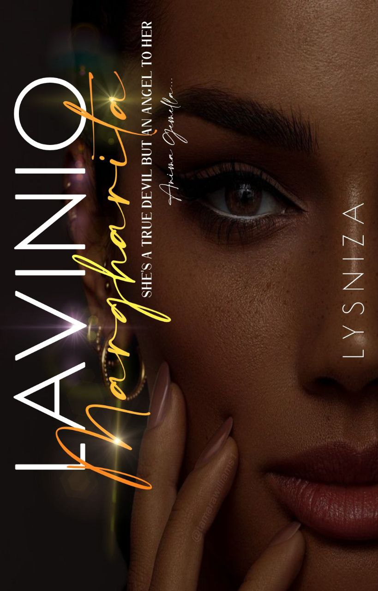
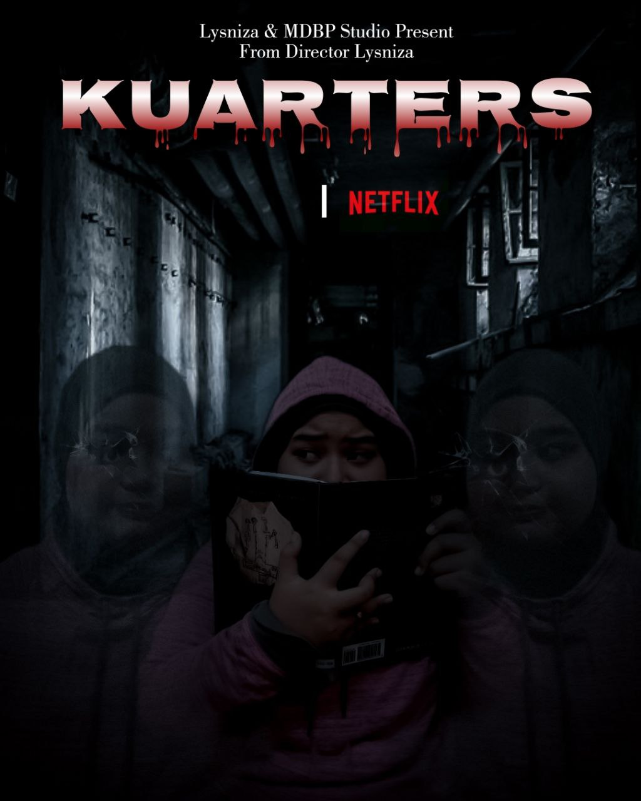
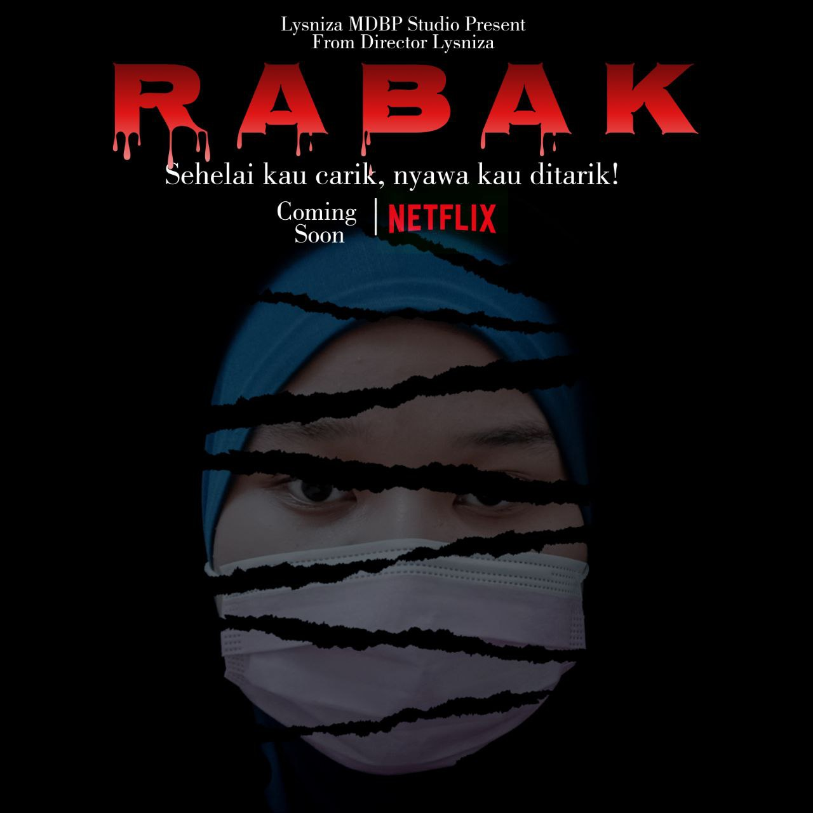
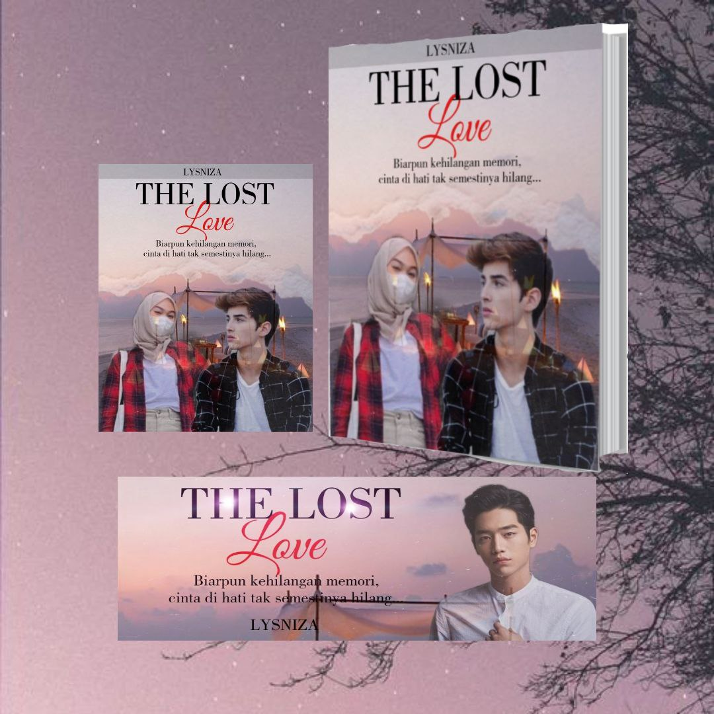
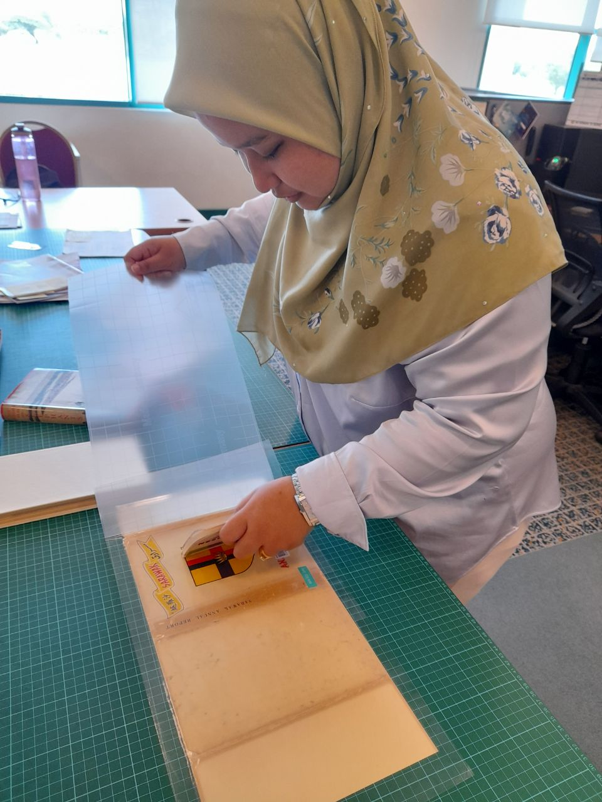
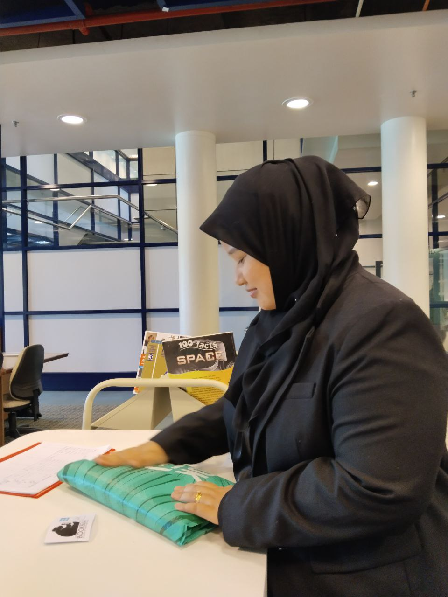
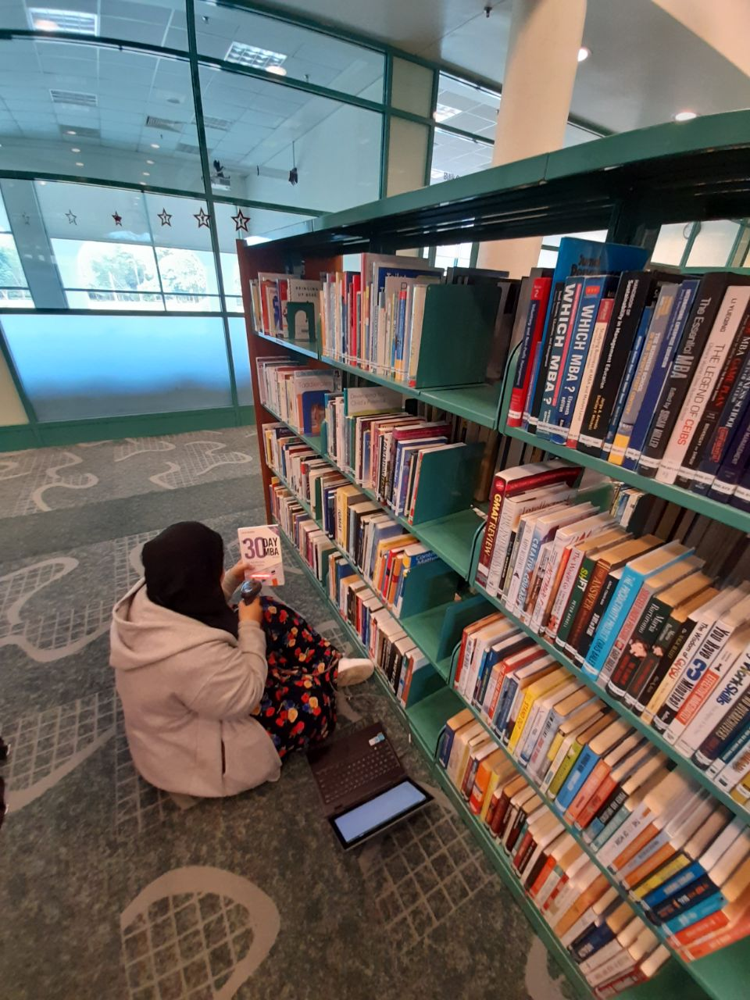
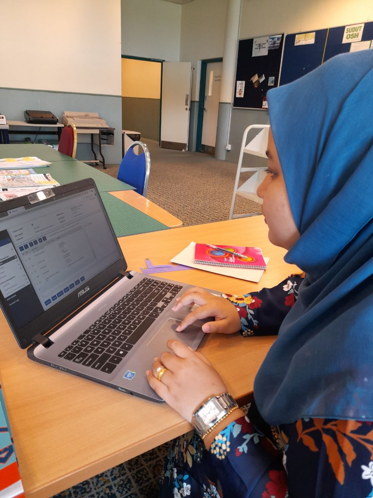

I have a few careers that I focused on based on my talents and interests. Introducing you, my future careers:
NOVELIST AND COVER EDITOR
These are my book cover editing works from 2019 until now:




Besides, I have an interest and a talent in writing a novel since 2016.
However, I just can make them on Wattpad until 2019 before I started to focus on SPM. One thing I realised on myself, Writing a story I love and Reading a novel I love
are the best therapy I ever felt. Being a novelist is one of my side career because I love sharing
a story with many people. For now, I am working on a novel titled 'Belongs To Mr. Perfect Eyes' while waiting for my first novel
titled 'Kuarters' which is a Horror novel to be published soon (After PBAKL) under Karya Publika Publication.
These are the novels I wrote:
Belongs To Mr. Perfect Eyes
Lavinio Margharita
The Lost Love
Kuarters
Readers call me 'Lysniza'. You can reach me on Wattpad by clicking the Wattpad logo.
LIBRARIAN
Being a librarian is not easy as people expected. It is quite tough and
need higher patience and effort.
These are the pictures when i am doing my internship:




Click the logo to know about my Internship Library: